flowchart LR
Internet[Internet] --> Router[Home Router]
Router --> Edge[Mini PC Edge Proxy<br/>172.30.1.27]
Edge --> LB[MetalLB LoadBalancer IP<br/>172.30.1.240]
LB --> Ingress[ingress-nginx]
Ingress --> Service[Kubernetes Service]
Service --> Pod[Pod]
홈랩 DevOps 포트폴리오
NAS와 남은 PC 기반 Kubernetes GitOps 운영 경로
1 핵심 요약
Infra
NAS와 남은 PC를 활용해 여러 컨테이너 이미지를 배포하고 운영할 수 있는 홈랩 인프라 구축
GitOps
Argo CD를 이용한 Git commit 기반 자동 배포
C++ Edge
nginx를 모방한 C++ 서버 런타임 위에 웹 서버와 HTTPS 프록시 구현
Operate
개인 도메인, Prometheus/Grafana, Terraform/Kubespray까지 연결한 운영 경로 정리
| 항목 | 내용 |
|---|---|
| 문서 역할 | NAS/PC 기반 홈랩에서 여러 컨테이너 이미지를 운영할 수 있는 인프라 증거 정리 |
| 현재 공개 문서 | mint-cocoa.github.io/portfolio |
| 홈랩 미러 | portfolio.mintcocoa.cc |
| 준비할 공개 앱 | k8s-status(Gatus), dropapp(PairDrop) |
| 이미지 레지스트리 | GHCR |
| 배포 제어 | GitOps + Argo CD automated sync |
| 실행 환경 | NAS + 남은 PC + Proxmox VM 기반 native Kubernetes HA cluster |
| 구축 자동화 | Terraform + Kubespray |
| 모니터링 | Prometheus + Grafana lightweight profile |
| 기준 공개 경로 | mint-cocoa.github.io/portfolio |
2 개요
이 문서는 NAS와 남은 PC를 활용해 여러 컨테이너 이미지를 배포하고 운영할 수 있는 인프라 환경을 구축한 과정을 정리한 운영 포트폴리오입니다. 컨테이너 이미지, GitHub Actions, GitOps, Argo CD, Kubernetes Ingress, NAS 기반 persistent storage를 하나의 홈랩 운영 경로로 연결했습니다.
직접 만든 C++ io_uring 서버 런타임에서는 nginx를 모방한 웹 서버 기능과 HTTPS reverse proxy를 구현했습니다. 이 프록시는 개인 도메인, SNI 기반 route, SSL 인증서 발급 가능한 edge 경로를 담당했고, portfolio 정적 파일 서버와 Kubernetes ingress 앞단에서 실제 외부 접근 경로를 검증하는 데 사용했습니다. 현재 상세 문서의 기준 공개 경로는 GitHub Pages이며, portfolio.mintcocoa.cc는 같은 docs/ 산출물을 서빙하는 홈랩 미러 경로로 운영합니다.
현재 검증된 live workload는 portfolio입니다. 추가 공개 ingress는 k8s.mintcocoa.cc와 dropapp.mintcocoa.cc를 중심으로 정리하고, webhook.mintcocoa.cc는 공개 포트폴리오 경로에서 제외합니다.
portfolio: GitHub Pages와 같은docs/산출물을 C++ RuntimeWeb 컨테이너로 서빙하는 홈랩 미러k8s-status: Gatus 기반 공개 status page 후보dropapp: PairDrop 기반 브라우저 파일 전송 앱 후보
3 문제 정의
기존 포트폴리오 문서는 게임 서버와 클라이언트 구현 중심이었습니다. 하지만 서버 런타임을 실제 운영 환경까지 연결했다는 증거는 별도로 정리되어 있지 않았습니다. 이번 작업의 핵심 질문은 다음과 같았습니다.
- NAS와 남은 PC 자원을 묶어 여러 컨테이너 이미지를 안정적으로 운영할 수 있는가?
- Git commit을 단일 변경 기준으로 두고 Argo CD가 자동 배포를 수행할 수 있는가?
- 직접 만든 C++ 서버 런타임이 웹 서버, HTTPS, SSL 인증서 발급 가능한 프록시 역할을 수행할 수 있는가?
- 개인 도메인에서 포트폴리오와 운영 서비스 경로를 실제로 노출할 수 있는가?
- Prometheus/Grafana로 홈랩 규모에 맞는 경량 모니터링을 구성할 수 있는가?
- Terraform과 Kubespray로 클러스터 구축 절차를 반복 가능한 코드로 남길 수 있는가?
4 전체 구조
홈랩은 관리, edge, 가상화, workload, delivery, storage 계층을 분리해 운영합니다.
| Layer | Component | Address | Role |
|---|---|---|---|
| Management Plane | Odroid | 172.30.1.83 |
Terraform, Ansible, Kubespray, kubectl, Helm, GitOps bootstrap |
| Edge Plane | Mini PC | 172.30.1.27 |
C++ HTTPS reverse proxy, certificate flow, Kubernetes API HAProxy |
| Virtualization Plane | Proxmox VE | 172.30.1.12 |
VM runtime, snapshots, backup base |
| Workload Plane | Kubernetes VMs | 172.30.1.231-235 |
Application and platform workloads |
| Delivery Plane | GitHub Actions, GHCR, Argo CD | external + cluster | Image build, registry, GitOps deployment |
| Storage Plane | NAS / OMV VM | 172.30.1.52 |
NFS backing store for Kubernetes PVCs and persistent data |
현재 Kubernetes cluster는 Proxmox VM 위에 Kubespray로 설치한 native Kubernetes HA cluster입니다. 과거 k3s 명칭이 남아 있는 Terraform 경로가 있지만, 현재 검증된 상태는 단일 control-plane k3s가 아닙니다.
5 배포 흐름
flowchart LR
Dev[Developer PC] --> GitHub[GitHub push]
GitHub --> Actions[GitHub Actions]
Actions --> GHCR[GHCR image push]
GHCR --> GitOps[GitOps repository update]
GitOps --> Argo[Argo CD sync]
Argo --> Rollout[Kubernetes rollout]
Rollout --> Exposure[ingress-nginx + MetalLB exposure]
배포 흐름은 애플리케이션 코드와 운영 매니페스트를 분리했습니다.
- 앱 코드는
mint-cocoa/iouring-runtime또는mint-cocoa/portfolio에 둡니다. - 컨테이너 이미지는
ghcr.io/mint-cocoa/<app>:<GITHUB_SHA>로 푸시합니다. - GitHub Actions가 GitOps repo의 Helm values를 해당 SHA로 갱신합니다.
- Argo CD가 변경된 chart를 감지해 클러스터에 반영합니다.
현재 검증된 Argo CD Applications는 home-root, metallb-config, nfs-subdir-external-provisioner, prometheus, grafana, demo-whoami, portfolio이며 모두 Synced / Healthy 상태입니다.
6 Kubernetes HA Cluster
현재 workload plane은 Proxmox VM 위에서 동작하는 5-node native Kubernetes HA cluster입니다.
| Host | IP | Role | Status | Runtime |
|---|---|---|---|---|
k8s-cp-1 |
172.30.1.231 |
control-plane | Ready | containerd |
k8s-cp-2 |
172.30.1.232 |
control-plane | Ready | containerd |
k8s-cp-3 |
172.30.1.233 |
control-plane | Ready | containerd |
k8s-worker-1 |
172.30.1.234 |
worker | Ready | containerd |
k8s-worker-2 |
172.30.1.235 |
worker | Ready | containerd |
검증된 버전은 다음과 같습니다.
Client Version: v1.34.7
Server Version: v1.35.4기본 구성은 Calico CNI, CoreDNS, NodeLocal DNS, kube-proxy, metrics-server를 포함합니다. 세 개의 control-plane node가 API server, scheduler, controller-manager, etcd를 담당하고, worker node가 application/platform workload를 수용합니다.
7 현재 Workloads
현재 live cluster에서 검증된 workload는 다음과 같습니다.
| Namespace | Workload | Purpose | Status |
|---|---|---|---|
argocd |
argocd-* |
GitOps controller | Running |
demo |
demo-whoami |
Ingress demo app | Running |
ingress-smoke |
echo |
Ingress smoke test | Running |
monitoring |
prometheus-server |
Metrics collection | Running |
monitoring |
grafana |
Dashboard UI | Running |
portfolio |
portfolio |
Portfolio site | Running |
storage-system |
nfs-subdir-external-provisioner |
Dynamic NFS PV provisioning | Running |
k8s-status와 dropapp은 공개 ingress에 연결할 OSS 앱 후보입니다. 현재 live cluster에는 아직 배포하지 않았기 때문에 포트폴리오에서는 검증된 운영 workload가 아니라 다음 배포 대상으로 구분합니다.
8 C++ 런타임 기반 웹 서버와 프록시
iouring_runtime_web는 WebServer, 라우터, request context, response builder, streaming upload API를 제공합니다. 웹 앱은 다음과 같은 형태로 작성했습니다.
iouring_runtime::web::WebServer server(config);
server.Get("/healthz", [](RequestContext& ctx) {
ctx.response.ContentType("text/plain; charset=utf-8")
.Body("ok")
.Send();
});
server.Get("/", [&](RequestContext& ctx) {
ServeStaticFile(ctx, static_root, "index.html");
});중요한 점은 단순히 TCP 서버를 만든 것이 아니라, HTTP 라우팅, 정적 파일 서빙, raw body upload, JSON API, 인증 헤더 처리까지 실제 웹 앱에 필요한 표면을 구현했다는 점입니다.
또한 nginx를 모방한 C++ reverse proxy 경로를 별도로 구현했습니다. 이 edge proxy는 SNI/hostname 기반 upstream route를 읽고, 개인 도메인으로 들어온 HTTPS 트래픽을 Kubernetes ingress, local service, Docker app, RuntimeWeb service로 분기합니다. SSL 인증서를 발급하고 갱신할 수 있는 구조를 염두에 두고 edge entrypoint를 분리했기 때문에, 애플리케이션 컨테이너는 내부 HTTP endpoint로 남겨두고 public HTTPS 처리는 프록시 계층에서 담당하게 했습니다.
9 k8s-status
k8s-status는 Gatus 기반 status page로 구성할 예정입니다. Kubernetes ingress와 공개 서비스 상태를 한눈에 볼 수 있어서 k8s.mintcocoa.cc의 성격에 잘 맞습니다.
| 항목 | 내용 |
|---|---|
| OSS | Gatus |
| 공개 경로 | k8s.mintcocoa.cc |
| 역할 | portfolio, dropapp, Ops API, Prometheus 등 public endpoint 상태 표시 |
| 배포 상태 | 후보 선정, live cluster 배포 전 |
10 dropapp
dropapp은 PairDrop 기반 브라우저 파일 전송 앱으로 구성할 예정입니다. dropapp.mintcocoa.cc라는 도메인과 서비스 목적이 직접 맞고, 공개 데모로 확인하기 좋은 작은 OSS 앱입니다.
| 항목 | 내용 |
|---|---|
| OSS | PairDrop |
| 공개 경로 | dropapp.mintcocoa.cc |
| 역할 | 브라우저 기반 파일 전송 데모 |
| 배포 상태 | 후보 선정, live cluster 배포 전 |
11 컨테이너 이미지
추가 공개 앱은 직접 만든 이미지를 새로 빌드하기보다 검증된 OSS 이미지를 Kubernetes workload로 올리는 방향이 더 적절합니다. portfolio는 기존 C++ 정적 파일 서버 이미지를 유지하고, Gatus와 PairDrop은 upstream image를 pin 해서 GitOps values로 관리합니다.
| 앱 | 이미지 전략 |
|---|---|
portfolio |
GHCR에 push한 C++ RuntimeWeb 이미지 |
k8s-status |
Gatus upstream image pin |
dropapp |
PairDrop upstream image pin |
12 GitHub Actions
main push 시 workflow가 다음 순서로 실행됩니다.
- GHCR 로그인
- Docker image build/push
home-k8s-gitopscheckout- Helm values의
image.tag를${GITHUB_SHA}로 갱신 - GitOps repo에 commit/push
이 구조 덕분에 앱 repo의 commit SHA가 그대로 배포 이미지 tag가 됩니다. 문제가 생겼을 때 Kubernetes에서 실행 중인 이미지 tag만 봐도 어떤 commit인지 추적할 수 있습니다.
13 GitOps와 Argo CD
GitOps repo는 앱별 Helm chart와 cluster application manifest를 분리했습니다.
apps/
k8s-status/
dropapp/
clusters/home/
k8s-status-application.yaml
dropapp-application.yamlApplication은 automated sync를 사용합니다.
syncPolicy:
automated:
prune: true
selfHeal: true
syncOptions:
- CreateNamespace=true이 설정으로 GitOps repo가 바뀌면 Argo CD가 자동으로 Deployment, Service, Ingress, PVC를 맞춥니다.
14 도메인과 Ingress
클러스터 내부에서는 nginx ingress와 MetalLB를 사용했습니다.
flowchart LR
Internet --> Proxy[Mini PC Edge Proxy<br/>172.30.1.27]
Proxy --> MetalLB[MetalLB<br/>172.30.1.240]
MetalLB --> Nginx[nginx ingress]
Nginx --> Portfolio[portfolio service]
Nginx --> Demo[demo-whoami service]
Nginx --> Grafana[grafana service]
Nginx --> Argo[Argo CD service]
현재 direct ingress path는 172.30.1.240 기준으로 정상입니다.
| Host | Direct ingress result |
|---|---|
portfolio.mintcocoa.cc |
200 OK 문서 미러 |
demo.mintcocoa.cc |
200 OK |
grafana.homelab.local |
302 /login |
argocd.homelab.local |
200 OK |
Edge proxy path는 portfolio.mintcocoa.cc HTTPS 경로가 portfolio service에 도달하는 것까지 검증했습니다. 이 호스트는 GitHub Pages custom domain이 아니라, 같은 정적 문서 산출물을 C++ RuntimeWeb 컨테이너가 서빙하는 미러 경로입니다. demo.mintcocoa.cc, grafana.homelab.local, argocd.homelab.local은 direct ingress에서는 동작하지만 edge proxy에서는 아직 proxy homepage로 라우팅되는 mismatch가 남아 있습니다.
아래 route tree는 React Flow 페이지에서 보여주던 Published route tree의 정적 문서 버전입니다. webhook.mintcocoa.cc 같은 내부용 route는 공개 포트폴리오 route tree에서 숨기고, Kubernetes ingress, Docker/local service, C++ RuntimeWeb, Kubernetes API HA 경로를 목적지별로 묶었습니다.
Actual route tree
Mini PC edge proxy에서 갈라지는 공개 경로
Edge proxy
tcp_reverse_proxy
0.0.0.0:80 / 443
Kubernetes ingress
MetalLB VIP 172.30.1.240
ingress-nginx -> Service -> Pod
homelab mirror
portfolio.mintcocoa.cc
portfolio service -> docs mirror
ingress smoke
demo.mintcocoa.cc
demo-whoami service
prepared route
k8s.mintcocoa.cc
k8s-status / Gatus
prepared route
dropapp.mintcocoa.cc
dropapp / PairDrop
C++ RuntimeWeb
iouring_runtime_web
static file server / health endpoint
container image
ghcr.io/mint-cocoa/portfolio
Git SHA tag -> GitOps values
Docker / local service
edge-local upstreams
local HTTP endpoints behind HTTPS proxy
ops read model
ops-api.mintcocoa.cc
Cloudflare Tunnel -> FastAPI 127.0.0.1:18081
Kubernetes API HA
172.30.1.27:6443
HAProxy virtual endpoint
control-plane
k8s-cp-1
172.30.1.231:6443
control-plane
k8s-cp-2
172.30.1.232:6443
control-plane
k8s-cp-3
172.30.1.233:6443
15 Storage Plane
Persistent storage는 OMV VM의 NFS export를 Kubernetes dynamic provisioning에 연결하는 방식으로 구성했습니다.
NFS server: 172.30.1.52:/export/k8s_pv
Provisioner: cluster.local/nfs-subdir-external-provisioner
StorageClass: nfs-client
Default StorageClass: yes검증된 PVC/PV 상태는 다음과 같습니다.
| Namespace | PVC | Size | Access Mode | Status |
|---|---|---|---|---|
monitoring |
grafana |
1Gi | RWO | Bound |
monitoring |
prometheus-server |
2Gi | RWO | Bound |
storage-smoke |
nfs-smoke-pvc |
1Gi | RWX | Bound |
이 구성으로 application이 PVC만 요청하면 NFS provisioner가 PV를 생성하고, cluster 내 workload는 동일한 storage class를 통해 persistent volume을 사용할 수 있습니다.
16 Observability
관측성은 full kube-prometheus-stack 대신 Prometheus chart와 Grafana chart를 분리한 lightweight profile로 구성했습니다.
이 선택의 이유는 다음과 같습니다.
- Proxmox host의 memory가 제한적입니다.
- 이미 native HA control-plane을 운영하고 있어 control-plane overhead를 줄여야 합니다.
- 현재 demo scope에서는 Prometheus Operator의 CRD와 controller overhead가 필수는 아닙니다.
현재 구성은 다음과 같습니다.
| Component | Chart | Version | Purpose |
|---|---|---|---|
| Prometheus | prometheus-community/prometheus |
29.2.1 | Metrics collection |
| Grafana | grafana/grafana |
10.5.15 | Dashboard UI |
| kube-state-metrics | Prometheus subchart | chart-managed | Kubernetes object metrics |
Sizing은 짧은 보존 기간과 작은 PVC를 기준으로 잡았습니다.
Prometheus retention: 24h
Prometheus retention size: 1GB
Prometheus PVC: 2Gi on nfs-client
Grafana PVC: 1Gi on nfs-client17 Verified Traffic Flows
Direct Kubernetes ingress flow는 다음 경로로 검증했습니다.
Client
-> 172.30.1.240
-> nginx ingress
-> portfolio/demo/grafana/argocd Service
-> PodEdge proxy mirror flow는 portfolio 경로에 대해 검증했습니다.
Client
-> 172.30.1.27:443
-> portfolio.mintcocoa.cc
-> portfolio service
-> docs/index.html즉, canonical 문서는 GitHub Pages에 남겨두고 portfolio.mintcocoa.cc는 홈랩 edge proxy와 C++ RuntimeWeb 컨테이너를 통과하는 미러로 운영할 수 있습니다. 남은 문제는 다른 hostname의 edge proxy virtual host 또는 upstream mapping입니다.
18 Live Ops Dashboard
운영 상태를 포트폴리오에서 바로 확인할 수 있도록 별도 read-only Ops API를 구성했습니다. 대시보드는 정적 Quarto dashboard로 렌더링되며, 브라우저에서 https://ops-api.mintcocoa.cc를 호출해 Prometheus와 Proxmox 요약 상태를 읽습니다.
flowchart LR
Portfolio[mint-cocoa.github.io/portfolio] --> Dashboard[OpsDashboard.html]
Dashboard --> Tunnel[ops-api.mintcocoa.cc<br/>Cloudflare Tunnel]
Tunnel --> FastAPI[FastAPI<br/>127.0.0.1:18081]
FastAPI --> Prometheus[Prometheus Ingress<br/>prometheus.homelab.local]
FastAPI --> Proxmox[Proxmox API<br/>172.30.1.12:8006]
이 경로는 기존 C++ TCP reverse proxy와 분리했습니다. ops-api.mintcocoa.cc는 Cloudflare Tunnel CNAME으로 연결되고, 로컬 FastAPI는 127.0.0.1:18081에만 바인딩됩니다. CORS는 https://mint-cocoa.github.io를 기준으로 허용합니다.
대시보드: Live Ops Dashboard
19 운영 검증
배포 후 다음을 검증했습니다.
| 검증 항목 | 확인 기준 |
|---|---|
| Argo CD Application | 앱이 Synced / Healthy 상태로 수렴 |
| Kubernetes resources | Deployment, Service, Ingress, PVC가 namespace에 생성 |
| HTTP health check | GitHub Pages 상세 문서 경로와 portfolio.mintcocoa.cc 미러 응답 |
| Storage | NFS provisioner가 PVC 요청으로 PV를 생성 |
| Image traceability | 실행 중인 image tag가 Git commit SHA와 일치 |
kubectl get application -n argocd
kubectl get nodes -o wide
kubectl get all,ingress,pvc -A
curl -sS -I https://mint-cocoa.github.io/portfolio/
curl -k -sS --resolve portfolio.mintcocoa.cc:443:172.30.1.27 \
https://portfolio.mintcocoa.cc검증 포인트는 단순히 Pod가 뜨는지가 아니라, 실제 Ingress 경로로 HTTP API가 응답하고, Argo CD가 GitOps source에서 live cluster를 수렴시키며, storage와 edge path가 운영 가능한 상태인지까지 확인하는 것이었습니다.
20 운영 증거
아래 캡처는 2026-04-26 기준 실제 홈랩 클러스터와 GitHub Actions에서 수집한 운영 증거입니다. Secret, token, repo credential 원문은 포함하지 않았습니다.
20.1 GitOps Sync
Argo CD Application들이 Synced / Healthy 상태로 수렴했고, portfolio 앱의 Service, Deployment, Ingress 리소스도 같은 revision에서 동기화되어 있습니다.
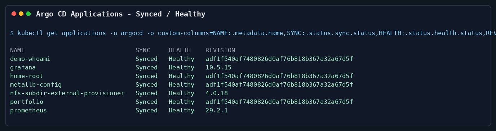
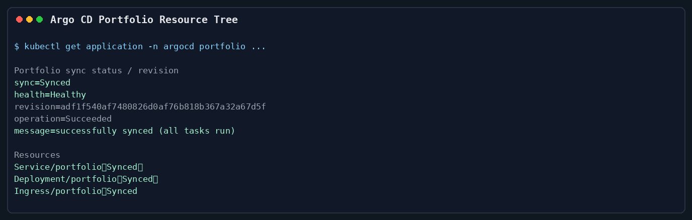
20.2 Cluster Runtime
컨트롤 플레인 3대와 워커 2대로 구성된 5-node Kubernetes 클러스터가 모두 Ready 상태입니다.
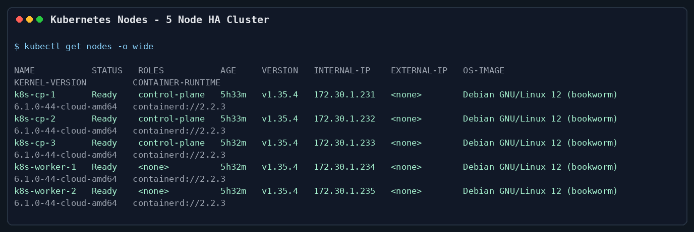
20.3 Ingress And Portfolio Mirror Host
portfolio.mintcocoa.cc Ingress는 nginx class를 사용하고, MetalLB가 할당한 172.30.1.240 LoadBalancer IP를 통해 서비스로 연결되도록 검증했습니다. 현재 이 호스트는 GitHub Pages와 같은 정적 문서 산출물을 홈랩에서 미러링하는 경로입니다.
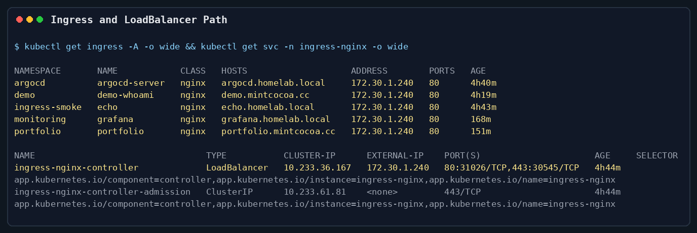
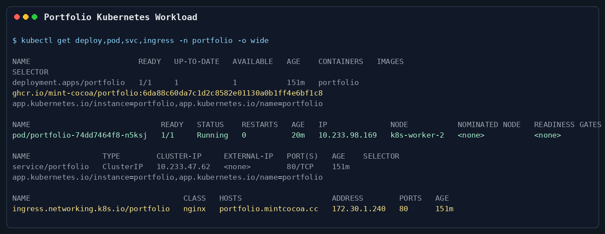
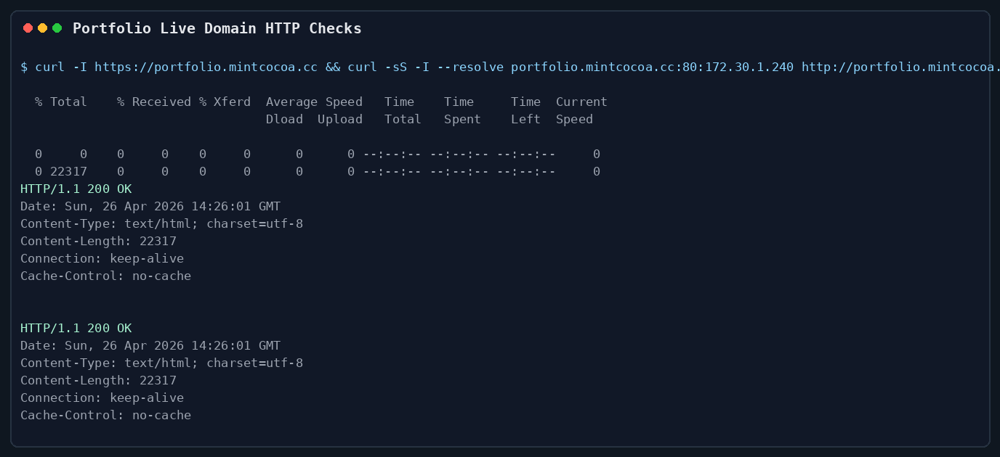
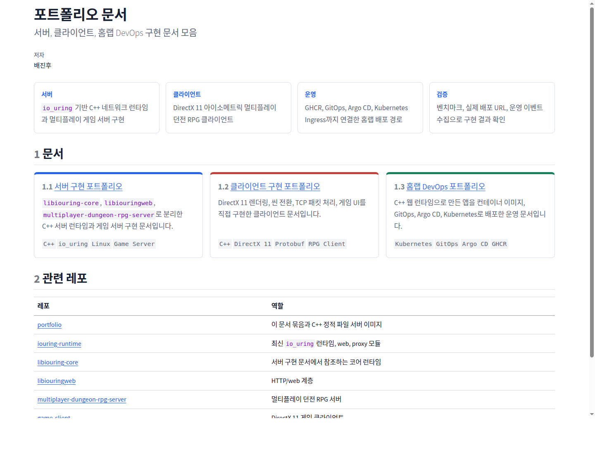
20.4 CI To GitOps Rollout
GitHub Actions의 portfolio image workflow가 commit SHA 6da88c60da7c1d2c8582e01130a0b1ff4e6bf1c8 이미지를 GHCR에 push했고, GitOps repo의 apps/portfolio/values.yaml image tag를 같은 SHA로 갱신했습니다. Argo CD portfolio revision adf1f540af7480826d0af76b818b367a32a67d5f는 이 GitOps 변경 commit입니다.
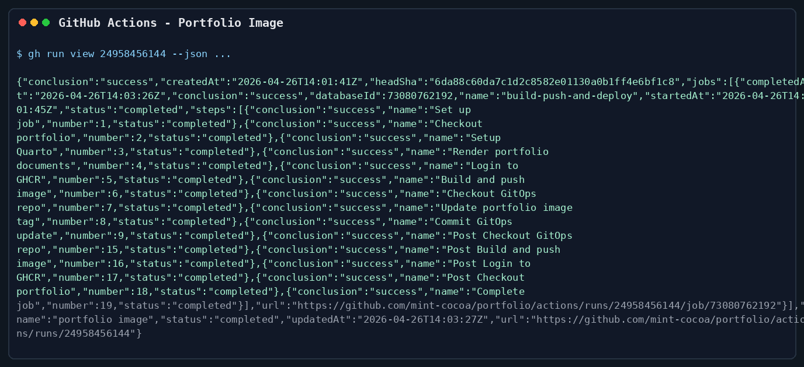
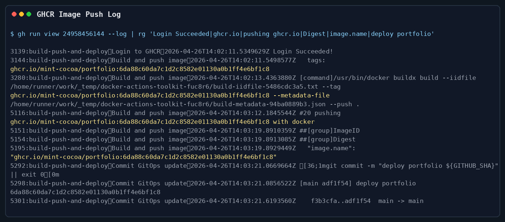
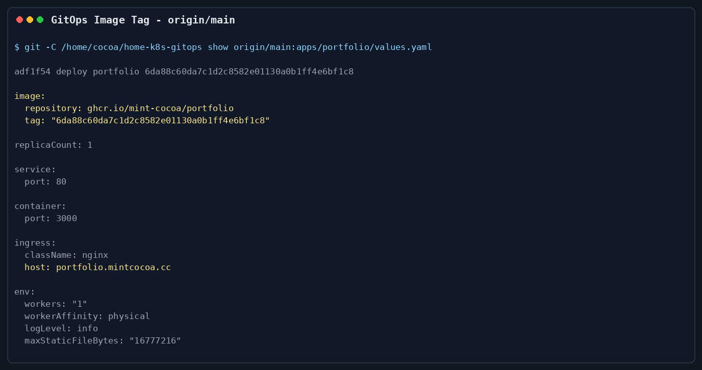
20.5 Storage And Observability
Prometheus와 Grafana는 monitoring namespace에서 실행 중이며, 기본 StorageClass는 nfs-client입니다. Grafana와 Prometheus PVC가 Bound 상태로 유지되어 stateless demo가 아니라 persistent storage까지 연결된 구성을 보여줍니다.
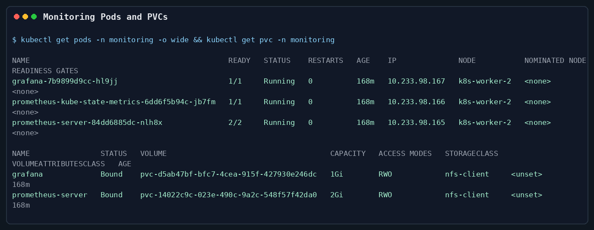
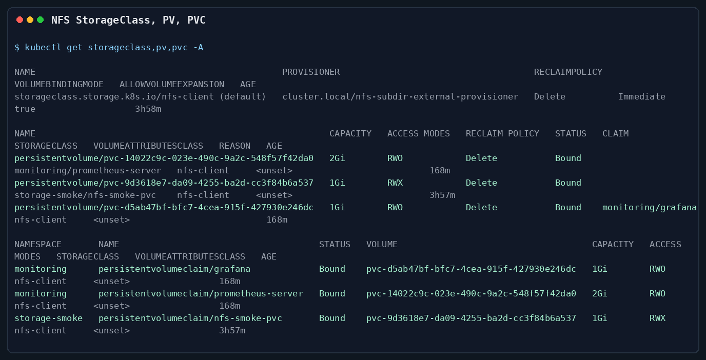
21 결과
이번 작업으로 다음을 달성했습니다.
- NAS와 남은 PC를 활용해 여러 컨테이너 이미지를 운영할 수 있는 Kubernetes 기반 홈랩을 구축했습니다.
- GitHub Actions가 GHCR image를 push하고 GitOps repo의 image tag를 갱신하는 경로를 구성했습니다.
- Argo CD automated sync로 Git commit 기반 자동 배포를 수행했습니다.
- nginx를 모방한 C++ 웹 서버/HTTPS 프록시 경로로 개인 도메인 트래픽을 검증했습니다.
- Proxmox VM 기반 5-node Kubernetes HA cluster에서 workload를 운영했습니다.
- Prometheus, Grafana, NFS dynamic provisioner로 경량 모니터링과 persistent storage 기반을 갖췄습니다.
- Terraform과 Kubespray를 이용해 VM/cluster 구축 절차를 자동화 가능한 형태로 정리했습니다.
22 Current Gaps
현재 남은 운영 gap은 다음과 같습니다.
- Edge proxy routing을 정리해
demo.mintcocoa.cc,grafana.homelab.local,argocd.homelab.local도172.30.1.240의 ingress backend로 라우팅해야 합니다. k8s-status와dropapp은 각각 Gatus, PairDrop 기반으로 GitOps 정의를 추가하고 live cluster에서 검증해야 합니다.- Terraform state는 S3 backend scaffold를 추가했지만, 실제 bucket versioning, backend credential,
terraform init -backend-config=backend.home.hcl검증은 별도 작업으로 남아 있습니다. - Kubespray source는
ansible/kubespray.lock으로v2.30.0tag에 pin 했지만, 실제 cluster upgrade 전에는 release note와 live Kubernetes version을 다시 대조해야 합니다. - Application secret은 SOPS/age 템플릿을 추가했지만, 실제 age recipient 등록, encrypted secret commit, Argo CD decryption integration은 아직 수행해야 합니다.
- NFS/PV 백업은 restic CronJob manifest를 추가했지만, encrypted restic secret 생성, 첫 backup job 실행, restore smoke test가 필요합니다.
- Edge proxy virtual host 정리 후 public DNS와 home router forwarding을 외부 네트워크에서 재검증해야 합니다.
23 회고
가장 큰 성과는 NAS/PC 기반 인프라, C++ edge runtime, 컨테이너 이미지, GitOps, Kubernetes HA cluster, ingress, monitoring이 하나의 end-to-end 시스템으로 연결됐다는 점입니다. C++ 서버 구현만으로 끝내지 않고, 실제 운영에 필요한 배포 자동화, 관측 가능성, persistent storage, 개인 도메인 route까지 연결하면서 런타임과 인프라의 실사용성을 검증했습니다.
다음 단계는 edge proxy virtual host mapping을 정리하고, Gatus 기반 k8s-status와 PairDrop 기반 dropapp을 Argo CD Application으로 활성화해 live workload로 검증하는 것입니다.
24 관련 레포
| 레포 | 역할 |
|---|---|
| iouring-runtime | C++ runtime, web module, proxy module |
| portfolio | 이 문서와 C++ 정적 파일 서버 이미지 |
| home-k8s-gitops | Helm values, Argo CD Application, cluster desired state |